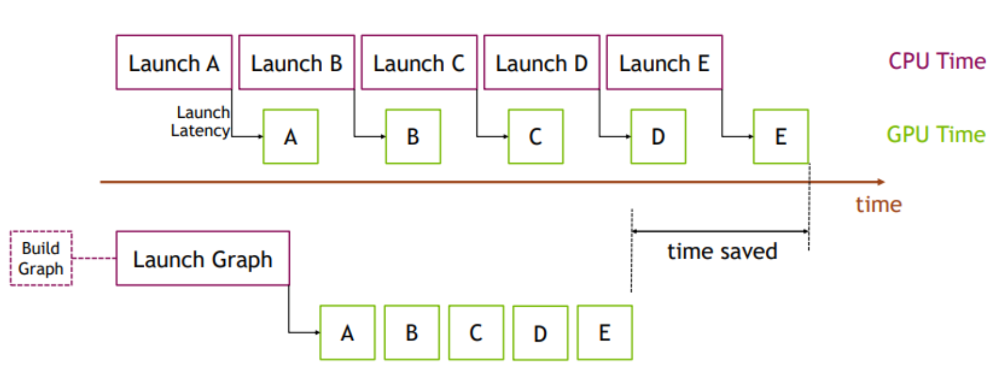

GPU Tasking
Modern scientific computing typically leverages GPU-powered parallel processing cores to speed up large-scale applications. This chapter discusses how to implement CPU-GPU heterogeneous tasking algorithms with Nvidia CUDA Graph.
Include the Header
You need to include the header file, taskflow/cuda/cudaflow.hpp, for creating a GPU task graph using tf::
#include <taskflow/cuda/cudaflow.hpp>
What is a CUDA Graph?
CUDA Graph is a new execution model that enables a series of CUDA kernels to be defined and encapsulated as a single unit, i.e., a task graph of operations, rather than a sequence of individually-launched operations. This organization allows launching multiple GPU operations through a single CPU operation and hence reduces the launching overheads, especially for kernels of short running time. The benefit of CUDA Graph can be demonstrated in the figure below:
In this example, a sequence of short kernels is launched one-by-one by the CPU. The CPU launching overhead creates a significant gap in between the kernels. If we replace this sequence of kernels with a CUDA graph, initially we will need to spend a little extra time on building the graph and launching the whole graph in one go on the first occasion, but subsequent executions will be very fast, as there will be very little gap between the kernels. The difference is more pronounced when the same sequence of operations is repeated many times, for example, many training epochs in machine learning workloads. In that case, the initial costs of building and launching the graph will be amortized over the entire training iterations.
Create a CUDA Graph
Taskflow leverages CUDA Graph to enable concurrent CPU-GPU tasking using a task graph model called tf::
#include <taskflow/cuda/cudaflow.hpp> // saxpy (single-precision A·X Plus Y) kernel __global__ void saxpy(int n, float a, float *x, float *y) { int i = blockIdx.x*blockDim.x + threadIdx.x; if (i < n) { y[i] = a*x[i] + y[i]; } } // main function begins int main() { const unsigned N = 1<<20; // size of the vector std::vector<float> hx(N, 1.0f); // x vector at host std::vector<float> hy(N, 2.0f); // y vector at host float *dx{nullptr}; // x vector at device float *dy{nullptr}; // y vector at device cudaMalloc(&dx, N*sizeof(float)); cudaMalloc(&dy, N*sizeof(float)); tf::cudaGraph cg; // create data transfer tasks tf::cudaTask h2d_x = cg.copy(dx, hx.data(), N); tf::cudaTask h2d_y = cg.copy(dy, hy.data(), N); tf::cudaTask d2h_x = cg.copy(hx.data(), dx, N); tf::cudaTask d2h_y = cg.copy(hy.data(), dy, N); // launch saxpy<<<(N+255)/256, 256, 0>>>(N, 2.0f, dx, dy) tf::cudaTask kernel = cg.kernel( (N+255)/256, 256, 0, saxpy, N, 2.0f, dx, dy ).name("saxpy"); kernel.succeed(h2d_x, h2d_y) .precede(d2h_x, d2h_y); // instantiate a CUDA graph executable and run it through a stream tf::cudaGraphExec ecec(cg); tf::cudaStream stream; stream.run(exec).synchronize(); // dump the graph cg.dump(std::cout); }
The graph consists of two CPU-to-GPU data copies (h2d_x and h2d_y), one kernel (saxpy), and two GPU-to-CPU data copies (d2h_x and d2h_y), in this order of their task dependencies.
We do not expend yet another effort on simplifying kernel programming but focus on tasking CUDA operations and their dependencies. That is, tf::
Compile a CUDA Graph Program
Use nvcc to compile a CUDA Graph program:
~$ nvcc -std=c++20 my_cudaflow.cu -I path/to/include/taskflow -O2 -o my_cudaflow ~$ ./my_cudaflow
Please visit the page Compile Taskflow with CUDA for more details.
Run a CUDA Graph on Specific GPU
By default, a tf::0. Each CUDA GPU has an integer identifier in the range of [0, N) to represent the context of that GPU, where N is the number of GPUs in the system. You can run a CUDA graph on a specific GPU by switching the context to a different GPU using tf::2.
{ // create an RAII-styled switcher to the context of GPU 2 tf::cudaScopedDevice context(2); // create a CUDA graph under GPU 2 tf::cudaGraph graph; // ... // create a stream under GPU 2 and offload the capturer to that GPU tf::cudaStream stream; tf::cudaGraphExec exec(graph); stream.run(exec).synchronize(); }
tf::
Create Memory Operation Tasks
tf::mem, such as memcpy and memset, that operate in bytes. Typed data operations such as copy, fill, and zero, take logical count of elements. For instance, the following three methods have the same result of zeroing sizeof(int)*count bytes of the device memory area pointed to by target.
int* target; cudaMalloc(&target, count*sizeof(int)); tf::cudaGraph cg; memset_target = cg.memset(target, 0, sizeof(int) * count); same_as_above = cg.fill(target, 0, count); same_as_above_again = cg.zero(target, count);
The method tf::T, given that sizeof(T) is 1, 2, or 4 bytes. The following example creates a GPU task to fill count elements in the array target with value 1234.
cf.fill(target, 1234, count);
Similar concept applies to tf::
cg.memcpy(target, source, sizeof(int) * count); cg.copy(target, source, count);
Run a CUDA Graph
To offload a CUDA graph to a GPU, you need to instantiate an executable CUDA graph of tf::
tf::cudaGraph graph; // modify the graph ... // create an executable CUDA graph and run it through a stream tf::cudaGraphExec exec(graph); tf::cudaStream stream; stream.run(exec); // wait for the executable cuda graph to finish stream.synchronize();
There is always an one-to-one mapping between an tf::
Update an Executable CUDA Graph
Many GPU applications require launching a CUDA graph multiple times and updating node parameters (e.g., kernel arguments or memory addresses) between iterations. tf::
tf::cudaStream stream; tf::cudaGraph cg; // create a kernel task tf::cudaTask task = cf.kernel(grid1, block1, shm1, kernel, kernel_args_1); // instantiate an executable graph tf::cudaGraphExec exec(cg); stream.run(stream).synchronize(); // update the created kernel task with different parameters exec.kernel(task, grid2, block2, shm2, kernel, kernel_args_2); // run the updated executable graph stream.run(stream).synchronize();
Between successive offloads (i.e., iterative executions of a CUDA graph), you can ONLY update task parameters, such as changing the kernel execution parameters and memory operation parameters. However, you must NOT change the topology of the CUDA graph, such as adding a new task or adding a new dependency. This is the limitation of Nvidia CUDA Graph.
Integrate a CUDA Graph into Taskflow
As tf::
tf::Executor executor; tf::Taskflow taskflow; taskflow.emplace([](){ // create a CUDA graph inside a static task tf::cudaGraph cg; cg.kernel(...); // instantiate a CUDA graph executable and run it through a stream tf::cudaGraphExec ecec(cg); tf::cudaStream stream; stream.run(exec).synchronize(); });